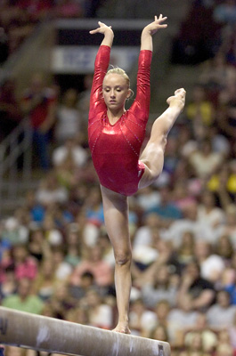

Nastia Liukin (USA)
2005 and 2007 World B Champion
2005 World AA Silver Medalist
2008 Olympic AA Gold Medalist

Medal Total
Olympic Games: 1 Gold, 3
Silver, 1 Bronze
World Championships: 3 Gold, 4 Silver
Nastia was born on October 30, 1989, in Moscow. Her parents were also gymnasts. Father Valery won AA silver at the 1988 Olympics, and mother Anna Kochneva won clubs with a perfect score of 20 at the 1987 World RSG Championships. Nastia's five Olympic medals (won in Beijing) and 9 world championships medals places her behind only Shannon Miller as the most decorated US gymnast. Her attempted comeback in 2012, as a beam and bars specialist, was not successful. Visit her website for the latest information.
Competition
Results
2002
Jr. Pan American Games: 2nd AA
Jr. US Classic: 3rd AA
Jr. USA Championships: 15th AA
Jr. WOGA Classic: 1st AA
2003
Jr. American Classic: 1st AA
Jr. Comaneci Invitational: 1st AA
Jr. US Classic: 1st AA
Jr. USA Championships: 1st AA
Jr. WOGA Classic: 1st AA
Pan American Games: 1st Team, 2nd AA, 1st B, 2nd UB, 2nd FX
Parkette Invitational: 1st AA (11-13 age group)
2004
Jr. American Classic: 1st AA
Jr. USA Championships: 1st AA
Jr. WOGA Classic: 1st AA
2005
US Classic: 1st AA
USA Championships: 1st AA
USA-GBR Dual Meet: 1st Team, 1st AA
USA-SUI Dual Meet: 1st Team, 1st AA
WOGA Classic: 1st AA
World Championships: 2nd AA, 1st B, 2nd FX
2006
American Cup: 1st AA
US Classic: 4th AA
World Championships: 2nd UB
2007
Pan American Games: 1st Team, 2nd UB, 2nd B
USA Championships: 3rd AA
World Championships: 1st Team, 5th AA, 1st B, 2nd UB
2008
American Cup: 1st AA
Olympic Games: 2nd Team, 1st AA, 2nd UB, 2nd B, 3rd FX
Pacific Rim Championships: 1st Team, 1st AA, 1st B, 2nd UB, 4th FX
US Olympic Trials: 2nd AA
USA Championships: 2nd AA, 1st UB, 1st B, 8th FX
2009
US Classic: 2nd B
USA Championships: 4th B
2012
US Classic: 3rd B
US Olympic Trials: 7th B, 10th UB
USA Championships: 6th B, 19th UB
This page was created on June 13, 2010 and was last updated on July 01, 2012.
© Gymn Forum